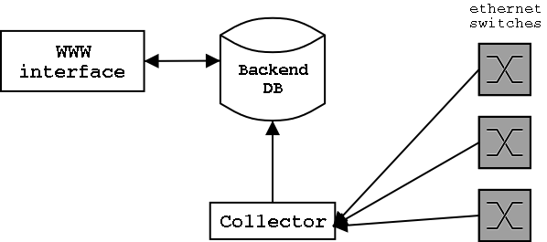

<< Home
| > Next
SPAM - Overall Structure

Switch Ports Activity Monitor consists from three basic components:
- Collector
- This is the core component of SPAM, which is responsible for retrieving
information from ethernet switches using SNMP; it generates list of switches
and list of ports for each switch; it stores retrieved information into
database for changes tracking. Collector is written in Perl and is
executed from cron(8) on regular basis.
More on collector >>
- WWW Interface
- Enables user to add, remove and query patches database (basically the
PORTTABLE table).
More on WWW interface >>
- Backend Database
- SQL database used to store information from collector and administrative
data.
More on backend database >>